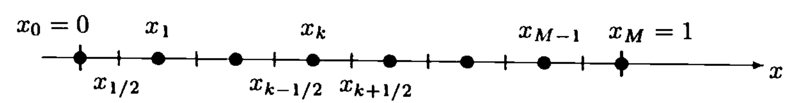
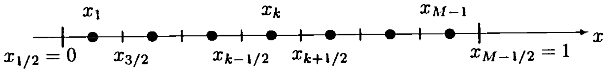
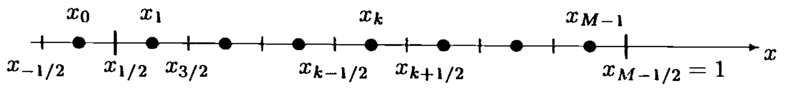
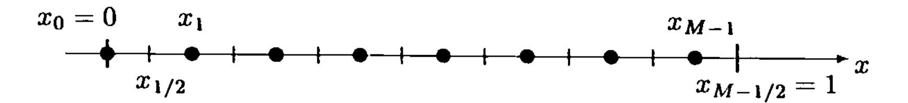

10) Conservation laws and introduction to Finite Volumes#
Last time:
Discrete Fourier analysis
Von Neumann stability analysis
Today:
Derivation of Difference Equations
Non-homogeneous equations
Conservation Laws
Cell-centered values and vertex/edge/face-centered values
Cell-centered grids
1. Derivation of Difference Equations#
Not all schemes we have developed so far are good schemes.
We have seen that when we try to replace a derivative by a logical difference approximation sometimes things go wrong.
Many good and bad schemes can be developed by the Taylor’s expansion approach.
In this lecture we demonstrate another approach to developing difference schemes. This method might be referred to as the conservation law approach in that it developes the difference scheme using a conservation law motivated by the physics of the problem.
This method is a basic application of the Finite Volumes Method (FVM).
We will see that although schemes developed using conservation approaches have some nice properties, it is possible to develop bad schemes using them.
2. Non-homogeneous equations#
Consider the non-homogeneous heat equation (1.2.1)
Consider a bounded domain \(D=(0,1)\) filled with a thermally conductive solid (e.g., a uniform rod that has thermal variations only in the \(x\) direction).
3. Conservation Laws#
Let \(v=v(x,t)\) denote the temperature at the point \(x \in \bar{D}\) (closure) and time \(t\geq 0\). Ler \(R = (a,b)\) be an arbitrary fixed (in time) subinterval of \(D\) so that the points \(x=a\) and \(x=b\) represent the boundary of \(R\).
The total content of \(R\) is given by:
where the constants \(\rho\) and \(c\) represent the density and specific heat of the solid, respectively. Then the time rate of change of the total heat content of the interval \(R\) is
The rate of change of total heat content in \(R\) must be due to heat supplied in the interval by internal sources and/or heat that flows across the boundary of the region \(R\).
If we let \(\mathcal{F} = \mathcal{F}(x,t)\) (called the source density) denote the amount of heat per unit volume per unit time generated at the point \(x \in R\) and time \(t>0\), the rate of change of heat content in \(R\) due to $\mathcal{F} is
The flux of heat, \(q\), across the boundary of \(R\) (the amount of heat flowing across the boundary \(\partial R\) per unit area per unit time) is assumed by Fourier’s law to be proportional to the normal component of the temperature gradient, i.e., in our case, \(q(a) = - \kappa (a,v) \frac{\partial v}{\partial x}(a,t)\) and \(q(b) = \kappa (b,v) \frac{\partial v}{\partial x}(b,t)\), where \(\kappa = \kappa (x,v)\) is the thermal conductivity.
If we then balance the time rate of change of total heat content to the sum of heat supplied by external sources and the heat that flows across the boundary of \(R\) we get:
If we notice that
we can rewrite the above as
Without loss of generality, since the volume \(R\) is arbitrary and the integrand is continuous, we can actually remove the integral sign:
If \(\kappa\) is constant, we recover equation (10.1) with \(\nu = \kappa / c \rho\) and \(F = \mathcal{F}/ c \rho\).
We will develop numerical methods that are based on this derivation. The hope is that such methods will contain more of “the physics of the problem” than if we naively approximate the resulting PDE by differences (such as in the Finite Differences method).
4. Cell-centered values and vertex/edge/face-centered values#
To apply these ideas, we consider the grid placed on the interval \((0,1)\), such as in the following figure.

This looks exactly like the grid we have used in our introduction to Finite Differences, except that here intervals are marked off, centered at the grid points (or grid edges/faces, if in \(2D\) or \(3D\)).
We identify the endpoints of the subinterval centered about \(x_k\) as \(x_{k \pm 1/2}\).
We refer to the subinterval \((x_{k - 1/2},x_{k + 1/2})\), as the \(k\)-th cell.
This subinterval is referred to as the control volume associated with the \(k\)-th grid point.
To derive a difference equation associated with the \(k\)-th grid point, we want to apply (10.2), which we call the integral form of the conservation law, to the subinterval \((x_{k - 1/2},x_{k + 1/2})\).
Assuming that \(c\), \(\rho\), and \(\kappa\) are constant, we can divide (10.2) through by \(c \rho\) and let \(\nu = \kappa/ c \rho\) and \(F = \mathcal{F} / c \rho\), we obtain:
Noting that this equation is still dependent on \(t\), we can integrate in time from \(t_n = n \Delta t\) to \(t_{n+1 } = (n+1)\Delta t\):
Hence, we have that
which is equivalent to (10.2) (which was true for all intervals). Hence (10.3) is an exact equation.
We can now proceed by discretizing (10.3) to obtain a Finite Difference approximation of (10.1). Just as we have derived and used different FD schemes, we can decide to approximate the integrals here in different ways. For instance:
Approximate the integral associated with the nonhomogeneous term by the midpoint rule with respect to \(x\) and the rectangular rule with respect to \(t\) (evaluating at \(t_n\))
Approximate the integral on the left hand side by the midpoint rule with respect to \(x\)
Approximate the flux term (last term in (10.3)) with the rectangular rule (evaluating at \(t_n\))
We now need to approximate the flux term \(\left[ (v_x)_{k + 1/2} - (v_x)_{k - 1/2} \right]\)
We will use Taylor’s expansion again:
where we have used the short-hand notation for the centered diff of the second-derivative introduced in Lecture 6.
Putting it all together, replacing \(v^n_k\) with \(u^n_k\), and dropping the \(O\) terms, we finally obtain the difference equation for (10.1):
Of course this is not the only possible scheme we could derive for this equation.
5. Cell-centered grids#
The derivations seen so far, which always involved vertex/edge/face centered grids are not the only ones possible or suitable for all problems.
We might as well consider the approximate function value (or the approximate average value) on the cell, or the center of the cell. This gives rise to what we call cell centered grids. See the figure below for an illustration.

We can see here that grid points are marked off at the center of the cells.
The main difference between this cell centered grid and the vertex centered grid shown above is at the endpoints.
Hence, as long as the same conservation law approach is used, we get the same difference schemes, no matter if a vertex or cell centered grid is used. But, depending on the treatment of the boundary, we may get different results due to boundary conditions.
We note that with a cell centered grid, the endpoint of the interval is not a grid point. It is an endpoint of a computational cell. This makes it very nice for the treatment of Neumann boundary conditions, for which we need to consider the first cell, say, to define the BC at the left endpoint of the domain, \([x_{1/2}, x_{3/2}]\) (as opposed to half an interval \([x_0, x_{1/2}]\) in the case of vertex centered grids).
If cell centered grids make our life easier to define Neumann-type BCs, you can imagine that it would make our like a bit harder to define a Dirichlet-type BC. In fact, for the treatment of a Dirichelet boundary condition on a cell centered grid, we need to add a ghost cell outside of the domain.
Just as for vertex centered grids, we needed to add ghost points outside of the domain for Neumann-type BCs (so you see the symmetry here).
When we add a ghost cell to define a Dirichelet BC, we consider the Dirichelet BC to be prescribed at the center of the ghost cell. See figure below:

Similarly, one could also think of including only a half cell at the end of the interval. See figure below:
